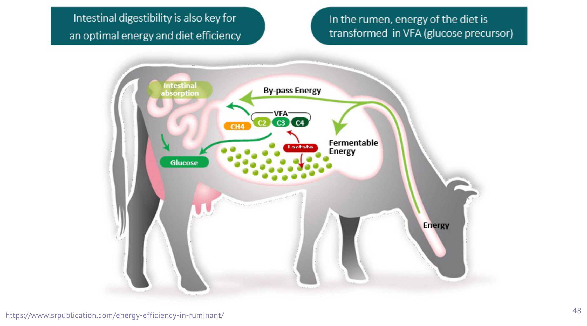
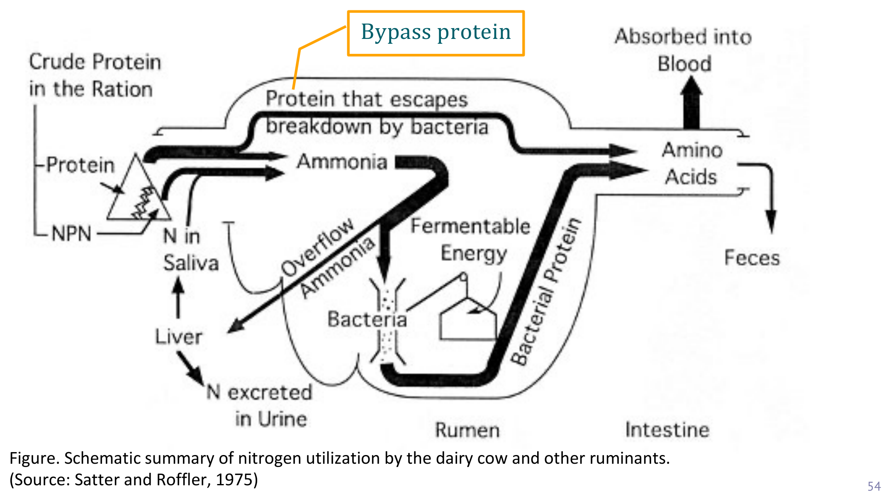

重點摘要
講義標題雖然叫「消化生理」，但內容其實是站在瘤胃發酵這個生理基礎上，直接切入乳牛生產醫學（dairy production medicine）的應用層面——怎麼幫牛設計日糧、怎麼管理飼養才能兼顧產乳量與牛隻健康。核心是三個必需營養素：水分（有明確的每日需求公式）、能量（瘤胃菌把碳水化合物發酵成揮發性脂肪酸VFA，這是反芻動物跟單胃動物最根本的能量利用差異）、蛋白質（瘤胃菌參與分解與再合成，衍生出RDP／RUP／bypass protein這組分類，推測是國考常考的內容）。最後帶到飼料分類與TMR（完全混合日糧）這個牧場實務工具。這頁的姊妹篇〈轉換期、低血鈣與DCAD〉會接著講乾乳期管理與低血鈣症，兩份文件建議一起讀，因為飼養管理正是預防低血鈣的第一道防線。
背景知識，推測國考低頻
VFA比例，推測國考高頻
RDP/RUP，推測國考高頻
牧場實務，中頻
※ 「推測國考熱點」是我依內容特性（有明確數字、能串成機轉整合題）做的個人判斷，沒有實際核對過歷屆考古題，僅供參考、不是驗證過的事實，讀的時候請自行斟酌權重。
- 反芻動物是「脂肪酸動物」不是「醣類動物」：單胃動物（如豬）吸收利用的是單醣，反芻動物則靠瘤胃發酵把碳水化合物轉成揮發性脂肪酸（VFA），這是理解後面所有能量代謝的起點。
- VFA三劍客比例約為乙酸(acetate)65%／丙酸(propionate)15%／丁酸(butyrate)10%，丙酸是主要的糖質新生（gluconeogenesis）受質，乙酸則是乳脂合成的主要前驅物——這組數字跟因果關係，推測是國考經典考點。
- 結構性碳水（粗纖維）發酵慢、乙酸比例較高，會提高乳脂率；反之精料過多、纖維不足時乙酸比例下降，可能造成乳脂率下降甚至瘤胃酸中毒（這頁只點出關聯，機轉細節留給臨床疾病篇）。
- 粗蛋白（CP）分三部分：RDP（瘤胃可分解蛋白，60–65%）、RUP（瘤胃非分解蛋白／bypass protein，35–40%，依NASEM 2021建議）、IIP（不可消化蛋白）；RDP被菌分解成氨、再合成菌體蛋白供小腸消化利用。
- TMR（完全混合日糧）把精料、粗料、農產副產物依配方混合成單一均質飼料，核心目的是穩定瘤胃發酵、防止牛隻挑食——這是牧場實務管理的基本工具，也是後續轉換期飼養設計的基礎。
反芻動物分類與生產醫學導論
這節是背景鋪陳，推測國考幾乎不會考細到界門綱目的分類，快速掃過即可，重點放在「反芻動物」這個大分類的定義與「生產醫學」這個獸醫角色的轉變。
分類學重點（低頻背景知識）
| 物種 | 分類重點 |
|---|---|
| 牛 Cattle | 目Artiodactyla（偶蹄目）→亞目Ruminantia（反芻亞目）→科Bovidae（牛科／洞角科）→屬Bos（牛屬）；種Bos taurus再分歐洲牛（B. t. taurus）與瘤牛（B. t. indicus） |
| 水牛 Water buffalo | 屬Bubalus；沼澤水牛（B. b. carabanesis，48條染色體，東南亞分布，役用為主）vs. 河川水牛（B. b. arnee，50條染色體，印度／義大利／中東分布，乳用為主） |
| 羊 Sheep/Goat | 同屬Bovidae，但為Caprinae（羊亞科）；羊屬Ovis與山羊屬Capra |
| 駱駝科 Camelids | 同為偶蹄目，但亞目為Tylopoda（胼足亞目），不屬於Ruminantia——駱駝、羊駝雖會反芻但分類上是「假反芻動物」 |
反芻動物（ruminants）的定義：偶蹄、草食性，能將已吞下的食物逆嘔回口腔再次咀嚼（rumination），再送進特化的胃室（如瘤胃）由微生物發酵萃取養分；因為這個發酵過程發生在消化道前段，稱為前腸發酵（foregut fermentation）。
乳牛生產醫學 Dairy Production Medicine
現代牧場獸醫師的角色已經從單純「個別動物疾病診斷治療」，擴展到整合獸醫流行病學、畜舍工程、動物營養、牧場經營管理、人事管理與紀錄建立的綜合能力，並理解「從牧場到餐桌（farm-to-table）」的完整脈絡，協助牧場達成年度經營目標——這就是「生產醫學（production medicine）」的核心概念。牛羊獸醫師的臨床工作除了個體疾病診療，更需要著重牛群健康的管理與監控，透過疾病預防提升牧場經濟效益。
酪農業要達到高產乳量與高乳品質的經濟目標，仰賴三大支柱：①良好的飼養管理概念與技術（均衡日糧、妥善管理、疾病預防與控制）、②合適的飼養環境（牛舍設計等相關設施）、③遺傳與育種。
乳牛生產週期 Production Lifecycle
初乳3–5天→代乳品至8週齡
13–15月齡，體重>330–350kg
≈280天
初產牛24–26月齡，產前體重>575kg
45–60天
※ 公犢牛（bull calf）3–5天即離開牛群，多數送肥育場育肥至24月齡、約600kg體重後屠宰，僅少數留作種公牛。
必需營養素：水與能量（VFA）重要
五大必需營養素——水、能量、蛋白質、維生素（A/D/E）、礦物質（含DCAD，見姊妹篇）——這節先講水與能量，是全頁我推測國考密度最高的一節。
水分 Water：最容易被忽略但最重要
每日飲水量 (L) ＝ 乾物質採食量 (kg) × 6 ＋ 產乳量 (kg)
Daily water intake (L) = Dry matter intake (kg) × 6 + Milk yield (kg)
泌乳牛每採食1kg乾物質（DMI）需要4–5L水，每產1kg乳還需額外3–5L水。一隻非泌乳牛（DMI 10kg/天）每天約飲水40L；若日產16–20kg乳，需額外70L水；日產35kg乳的牛，總飲水量可接近100L。環境溫度顯著影響飲水量：熱緊迫環境下每kg DMI需水量可增至10–12L；涼爽環境（<20°C）則降至每kg DMI僅3–4L。優質飲水須新鮮、乾淨、涼爽，且讓牛隻可以隨時自由飲水（ad libitum）。
能量 Energy：VFA是反芻動物的能量貨幣
碳水化合物是乳牛的主要能量來源，脂肪可提供部分能量但非必需；乳牛能量需求常以泌乳淨能（Net Energy for Lactation, NEL）表示，生產1kg乳（4%脂肪）約需0.74 Mcal NEL。
飼料中的碳水化合物經瘤胃微生物發酵，產生短鏈脂肪酸（SCFA）／揮發性脂肪酸（VFA），這是反芻動物的主要能量來源，也是糖質新生（gluconeogenesis）的受質。單胃動物（如豬）直接吸收利用單醣，因此可稱為「醣類動物（sugar animals）」；反芻動物則被稱為「脂肪酸動物（fatty acid animals）」——這是理解反芻動物能量代謝與單胃動物本質差異的關鍵句子，推測國考常以此概念出題。

VFA的組成比例與各自角色重要
| VFA | 約略比例 | 主要角色 |
|---|---|---|
| 乙酸 Acetate | ≈65% | 乳脂合成的主要前驅物；來自結構性碳水（纖維）較慢速發酵 |
| 丙酸 Propionate | ≈15% | 糖質新生（gluconeogenesis）的主要受質，是反芻動物「造糖」的主要途徑 |
| 丁酸 Butyrate | ≈10% | 瘤胃上皮細胞的重要能量來源，促進瘤胃乳突發育 |
瘤胃產生的VFA約佔整個消化道VFA總產量的84%。飼料中可利用的碳水化合物可概分兩類：結構性碳水化合物（來自粗料纖維）結構緻密、瘤胃菌發酵速率較慢，NEL產出較低，但發酵後乙酸比例較高——因為乙酸是乳脂合成的主要前驅物，這類碳水化合物有助於提高乳脂率；相對地，非結構性碳水化合物（澱粉等，來自精料）發酵快、丙酸比例較高。
當日糧精料比例過高、有效纖維不足時，瘤胃發酵型態會往丙酸／丁酸傾斜、乙酸比例下降，可能造成乳脂率下降，嚴重時併發瘤胃酸中毒（rumen acidosis）。這個機轉的完整臨床疾病討論留待反芻動物疾病學後續課程處理，這裡只需要建立「碳水化合物種類→VFA比例→乳脂率」這條因果鏈的概念。
必需營養素：蛋白質重要
瘤胃菌是蛋白質代謝的關鍵中介者——牛真正利用的蛋白質，大部分其實是「菌體蛋白」而非飼料蛋白本身，這個轉譯過程是這節的核心。
粗蛋白（CP）的三個分類
| 分類 | 定義 |
|---|---|
| RDP Rumen Degradable Protein | 瘤胃可分解蛋白——會被瘤胃菌分解為氨，作為菌體增殖的氮源，再合成為菌體蛋白或胺基酸 |
| RUP Rumen Undegradable Protein | 瘤胃非分解蛋白，又稱繞道蛋白（bypass protein）——未被瘤胃菌分解，直接通過瘤胃進入小腸被牛隻自己消化吸收 |
| IIP Indigestible Intake Protein | 不可消化蛋白——整段消化道都無法消化利用的部分 |
攝入的粗蛋白（CP，含氮物質的統稱）中，約60–65%以上會被瘤胃菌分解為氨，這些氨是菌體增殖所需的氮源，隨後被合成為菌體蛋白或胺基酸。這些菌體蛋白進入小腸後被牛隻消化利用。依NASEM（2021，前身為NRC）建議，一隻日產30kg乳的乳牛，RDP應佔日糧粗蛋白的60–65%，RUP應佔約35–40%。

飼料中的含氮物質不只來自蛋白質，也包含非蛋白氮（Non-Protein Nitrogen, NPN），如尿素——這類物質本身不是胺基酸鏈，但同樣可以被瘤胃菌當作氮源分解利用、合成菌體蛋白，是配製低成本日糧時常運用的氮源補充策略。
粗料、精料與TMR
這節偏牧場實務，推測國考出題頻率中等，重點放在飼料分類邏輯與TMR的定義及優點。
飼料分類
飼料可概分兩大類：精料（concentrates）碳水化合物或蛋白質含量高、纖維低（如玉米、大麥、豆粕）；粗料／芻料（forages / roughages）纖維含量高、能量密度低。台灣常見粗料分兩類：
| 分類 | 常見品項 | 特色 |
|---|---|---|
| 禾本科 Grasses | 百慕達草（Bermuda hay）、燕麥草（Oat hay）、盤固拉草（Pangola hay）、梯牧草（Timothy hay）、青割玉米、狼尾草（Napier grass） | 蛋白質與礦物質含量較低 |
| 豆科 Legumes | 苜蓿草（Alfalfa hay） | 蛋白質與礦物質含量較高——豆科植物的根瘤菌（rhizobia，固氮根瘤菌）能利用大氣氮合成植物蛋白，禾本科缺乏這類菌，蛋白質含量因此較低 |
TMR 完全混合日糧 Total Mixed Ration
TMR是依營養需求配方設計，把精料、優質粗料、農產副產物等所有飼料原料混合成單一均質飼料，讓牛隻自由採食（ad libitum）；與傳統「精料、粗料分開給予」的餵飼方式不同。
確保牛隻每一口採食的營養組成都均衡一致
避免牛隻從飼料中挑選特定成分食用
均衡採食穩定瘤胃發酵型態，提升飼料利用效率、產乳量與日增重、改善乳肉品質
增進整體飼料的風味與接受度
⑤ 節省人力、提升作業效率——尤其結合機械化作業時，能大幅節省人力成本、提升整體操作效率。
雙語詞彙表 Bilingual Glossary
正文中第一次出現時都已經中英並列，這裡集中整理一份，方便考前只看英文名詞、測試自己記不記得對應的中文概念（反過來也可以）。
| 中文 | English | 一句話說明 |
|---|---|---|
| 反芻動物 | Ruminant | 能逆嘔反芻、靠前腸發酵消化植物性食物的偶蹄類動物 |
| 前腸發酵 | Foregut fermentation | 發酵作用發生在消化道前段（瘤胃） |
| 乳牛生產醫學 | Dairy production medicine | 整合流行病學、營養、經營管理的現代牧場獸醫角色 |
| 乾物質採食量 | Dry matter intake (DMI) | 不含水分的實際飼料攝取量，牧場管理核心指標 |
| 泌乳淨能 | Net Energy for Lactation (NEL) | 乳牛能量需求的常用表示單位 |
| 揮發性脂肪酸／短鏈脂肪酸 | Volatile fatty acid (VFA) / Short-chain fatty acid (SCFA) | 瘤胃發酵碳水化合物的產物，反芻動物主要能量來源 |
| 乙酸 | Acetate | VFA之一，≈65%，乳脂合成主要前驅物 |
| 丙酸 | Propionate | VFA之一，≈15%，糖質新生主要受質 |
| 丁酸 | Butyrate | VFA之一，≈10%，瘤胃上皮細胞能量來源 |
| 糖質新生 | Gluconeogenesis | 由非醣類物質（如丙酸）合成葡萄糖的代謝途徑 |
| 結構性碳水化合物 | Structural carbohydrate | 來自粗料纖維，發酵慢、提高乙酸比例與乳脂率 |
| 瘤胃酸中毒 | Rumen acidosis | 精料過多、纖維不足導致的瘤胃pH異常下降 |
| 粗蛋白 | Crude protein (CP) | 飼料中含氮物質的統稱 |
| 瘤胃可分解蛋白 | Rumen degradable protein (RDP) | 被瘤胃菌分解為氨、供菌體利用的蛋白部分 |
| 瘤胃非分解蛋白／繞道蛋白 | Rumen undegradable protein (RUP) / Bypass protein | 未經瘤胃分解、直接供小腸消化的蛋白部分 |
| 不可消化蛋白 | Indigestible intake protein (IIP) | 全消化道皆無法消化利用的蛋白部分 |
| 非蛋白氮 | Non-protein nitrogen (NPN) | 如尿素，可供瘤胃菌作為氮源利用 |
| 根瘤菌 | Rhizobia | 豆科植物根部的固氮菌，使豆科牧草蛋白質含量較高 |
| 完全混合日糧 | Total mixed ration (TMR) | 依配方混合所有飼料原料成單一均質飼料 |
| 精料 | Concentrate | 碳水化合物或蛋白質高、纖維低的飼料 |
| 粗料／芻料 | Forage / Roughage | 纖維含量高、能量密度低的飼料 |
學習重點整理
考前快速掃過，標重要的兩節（VFA、蛋白質）是我推測這頁的國考主戰場。
練習題 Practice Quiz
涵蓋VFA比例與角色、蛋白質分類、飲水公式各章節重點，最後一題為臨床情境整合題，先自己作答再點「顯示答案」核對。
VFA三者比例約為乙酸65%、丙酸15%、丁酸10%。丙酸是反芻動物糖質新生（gluconeogenesis）的主要受質；乙酸則是乳脂合成的主要前驅物。丁酸主要作為瘤胃上皮細胞的能量來源，比例最低。
結構性碳水化合物（來自粗料纖維）發酵較慢、產生較高比例的乙酸；精料（非結構性碳水化合物）發酵快、丙酸比例較高。當日糧纖維不足、精料過多時，乙酸比例下降會直接反映在乳脂率下降，嚴重時可併發瘤胃酸中毒。
依NASEM（2021，前身NRC）建議，日產30kg乳的乳牛，日糧CP中RDP應佔約60–65%（供瘤胃菌分解為氨、合成菌體蛋白），RUP（繞道蛋白）應佔約35–40%（直接供小腸消化吸收）。
單胃動物（如豬）的消化道以宿主自身酵素消化碳水化合物為主，最終產物是葡萄糖等單醣，直接被小腸吸收利用，因此稱為「醣類動物」。反芻動物的碳水化合物則在小腸消化之前，先進入瘤胃由微生物發酵，發酵的最終產物是揮發性脂肪酸（VFA：乙酸、丙酸、丁酸），而非單醣；這些VFA才是反芻動物真正吸收利用的主要能量形式與糖質新生受質，因此稱為「脂肪酸動物」。這個差異也解釋了為什麼反芻動物的日糧設計必須以「如何調控瘤胃發酵型態」為核心，而不是單純計算飼料本身的醣類含量。
(1) 發酵型態改變：大幅降低粗料（結構性碳水化合物來源）、提高精料（非結構性碳水化合物）比例，會使瘤胃發酵速率加快、VFA組成中丙酸與丁酸比例上升、乙酸比例相對下降；同時精料快速發酵也容易造成瘤胃pH下降，增加瘤胃酸中毒風險（這可能是牛隻出現跛行的原因之一，跛行常與蹄葉炎相關，而蹄葉炎在乳牛可能續發於瘤胃酸中毒）。
(2) 乳脂率下降的原因：乙酸是乳腺合成乳脂的主要前驅物，當瘤胃發酵型態因高精料、低纖維日糧而使乙酸比例下降時，乳腺可利用的乳脂合成原料減少，直接反映為乳脂率下降。這個案例說明了日糧粗精料比例的調整不能只看「提供多少能量」，還必須考慮對瘤胃VFA發酵型態與下游乳品質、蹄部健康的連鎖影響。